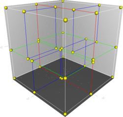

简介
k-D Tree(KDT,k-Dimension Tree)是一种可以高效处理
在算法竞赛的题目中,一般
构建
KDT本质上是二叉搜索树,每个节点对应坐标系中的某个点
已知KDT呢
若只剩一个点,返回这个点
选择一个维度,将空间划分为两个
在选择的维度上选择一个切割点,作为当前子树的根节点,根据 这个维度 把 切割点 两边的点分别划分到 左子树 和 右子树
继续递归处理左子树和右子树

一个三维k-d树。
第一次划分（红色）把根节点（白色）划分成两个节点,
然后它们分别再次被划分（绿色）为两个子节点。
最后这四个子节点的每一个都被划分（蓝色）为两个子节点。
因为没有更进一步的划分,最后得到的八个节点称为叶子节点。
其构建出 k-D Tree 的形态可能是这样的：

如果只是这样建树,复杂度无法保证
优化：
每次选择的切割维度是方差最大的维度
切割点选择该维度上的中位数,保证划分后左右子树大小大致相等
可以发现使用优化二后,构建出的KDT树高最多为
优化一也可以换成每次切割后都换另一个维度切割
插入
在插入一个
平衡
如果数据经过了构造,可能会造成KDT变成链
要怎么维护KDT的平衡性呢？
由于KDT的构造,不能支持旋转,类似与fhqtreap的随机优先级也不能保证其复杂度,可以保证平衡性的手段只有类似于替罪羊树的重构思想。
我们引入一个重构常数KDT上的一个结点
重构时,中序遍历子树得到原序列,然后重新构建出一棵KDT,代替原来不平衡的子树。
所以：成功插入结点后回溯插入的过程,维护结点的信息,如果发现当前的子树不平衡,则重构当前子树。
邻域查询
首先: 构建KDT
对每个点分别进行查询,也就是搜索
直接对KDT进行遍历每次搜索的复杂度是O(n)的,显然TLE
这时我们需要估价函数,在这里也就是:
估算出查询点到子树对应的长方形中的点的"最近距离"
若"最近距离"已经超过了当前答案,就跳过当前子树.
搜索时比较左右子树的"最近距离",先搜索"最近距离"小的
#include<bits/stdc++.h>
typedef double db;
#define fur(i,x,y) for(int i(x);i<=y;++i)
const int N=200011,inf=2122219134;
int n,id,ls[N],rs[N];
db ans=2e18,L[N],R[N],D[N],U[N];
struct node{db x,y;}t[N];
bool cmpx(node p,node q){return p.x<q.x;}
bool cmpy(node p,node q){return p.y<q.y;}
db min(db x,db y){return x<y?x:y;}
db max(db x,db y){return x>y?x:y;}
void upd(int x,int y){
L[x]=min(L[x],L[y]),R[x]=max(R[x],R[y]),
D[x]=min(D[x],D[y]),U[x]=max(U[x],U[y]);
}
void pu(int x){
L[x]=R[x]=t[x].x;
D[x]=U[x]=t[x].y;
if(ls[x])upd(x,ls[x]);
if(rs[x])upd(x,rs[x]);
}
int build(int l,int r){
if(l>r)return 0;
int m=l+r>>1;
db ax=0,ay=0,vx=0,vy=0;
fur(i,l,r)ax+=t[i].x,ay+=t[i].y;
ax/=(db)(r-l+1),ay/=(db)(r-l+1);
fur(i,l,r)
vx+=(ax-t[i].x)*(ax-t[i].x),
vy+=(ay-t[i].y)*(ay-t[i].y);
std::nth_element(t+l,t+m,t+r+1,vx>vy?cmpx:cmpy);
ls[m]=build(l,m-1),rs[m]=build(m+1,r),pu(m);
return m;
}
db dis(int p){return (t[p].x-t[id].x)*(t[p].x-t[id].x)+(t[p].y-t[id].y)*(t[p].y-t[id].y);}
db f(int p){
db res=0;
if(L[p]>t[id].x)res+=(L[p]-t[id].x)*(L[p]-t[id].x);
if(R[p]<t[id].x)res+=(t[id].x-R[p])*(t[id].x-R[p]);
if(D[p]>t[id].y)res+=(D[p]-t[id].y)*(D[p]-t[id].y);
if(U[p]<t[id].y)res+=(t[id].y-U[p])*(t[id].y-U[p]);
return res;
}
void qry(int l,int r){
if(l>r)return;
int m=l+r>>1;
if(m!=id)ans=min(ans,dis(m));
if(l==r)return;
db ld=f(ls[m]),rd=f(rs[m]);
if(ld<rd){
if(ld<ans)qry(l,m-1);
if(rd<ans)qry(m+1,r);
}
else{
if(rd<ans)qry(m+1,r);
if(ld<ans)qry(l,m-1);
}
}
int main(){
scanf("%d",&n);
fur(i,1,n)scanf("%lf%lf",&t[i].x,&t[i].y);
build(1,n);
fur(i,1,n)id=i,qry(1,n);
printf("%.4f\n",sqrt(ans));
}
思路与上一题差不多
可以用堆动态维护第
只需要开一个小根堆,先插入
每次找到一个点,若距离大于对顶则弹出对顶,向堆中插入改点
#include<bits/stdc++.h>
#pragma GCC optimize(3)
#define il __inline__ __attribute__ ((always_inline))
typedef long long ll;typedef unsigned long long ull;typedef double db;typedef short sht;
#define fur(i,x,y) for(int i(x);i<=y;++i)
#define fdr(i,x,y) for(int i(x);i>=y;--i)
#define fl(i,x) for(int i(head[x]),to;to=e[i].to,i;i=e[i].nxt)
#define clr(x,y) memset(x,y,sizeof(x))
#define cpy(x,y) memcpy(x,y,sizeof(x))
#define fin(s) freopen(s".in","r",stdin)
#define fout(s) freopen(s".out","w",stdout)
#define fcin ios::sync_with_stdio(false)
#define l2(n) ((int)(log2(n)))
template <class T>il T ABS(T x){return x>0?x:-x;}
template <class T>il T MAX(T x,T y){return x>y?x:y;}
template <class T>il T MIN(T x,T y){return x<y?x:y;}
template <class T>il T GCD(T x,T y){return y?GCD(y,x%y):x;}
template <class T>il void SWAP(T &x,T &y){T t=x;x=y;y=t;}
using namespace std;
namespace IO{const int str=1<<20;static char in_buf[str],*in_s,*in_t;bool __=0;il char gc(){return (in_s==in_t)&&(in_t=(in_s=in_buf)+fread(in_buf,1,str,stdin)),in_s==in_t?EOF:*in_s++;}il void in(string &ch){ch.clear();if(__)return;char c;while((c=gc())!=EOF&&isspace(c));if(c==EOF){__=1;return;}ch+=c;while((c=gc())!=EOF&&!isspace(c))ch+=c;if(c==EOF)__=1;}il void in(char &ch){if(__)return;char c;while((c=gc())!=EOF&&isspace(c));if(c==EOF)__=1;else ch=c;}il void in(char *ch){*ch='\0';if(__)return;char c;while((c=gc())!=EOF&&isspace(c));if(c==EOF){__=1;return;}*ch=c;ch++;while((c=gc())!=EOF&&!isspace(c))*ch=c,ch++;if(c==EOF)__=1;*ch='\0';}template<typename T>il void in(T &x){if(__)return;char c=gc();bool f=0;while(c!=EOF&&(c<'0'||c>'9'))f^=(c=='-'),c=gc();if(c==EOF){__=1;return;}x=0;while(c!=EOF&&'0'<=c&&c<='9')x=x*10+c-48,c=gc();if(c==EOF)__=1;if(f)x=-x;}template<typename T,typename ... arr>il void in(T &x,arr & ... y){in(x),in(y...);}const char ln='\n';static char out_buf[str],*out_s=out_buf,*out_t=out_buf+str;il void flush(){fwrite(out_buf,1,out_s-out_buf,stdout);out_s=out_buf;}il void pt(char c){(out_s==out_t)?(fwrite(out_s=out_buf,1,str,stdout),*out_s++=c):(*out_s++=c);}il void out(const char* s){while(*s)pt(*s++);}il void out(char* s){while(*s)pt(*s++);}il void out(char c){pt(c);}il void out(string s){for(int i=0;s[i];i++)pt(s[i]);}template<typename T>il void out(T x){if(!x){pt('0');return;}if(x<0)pt('-'),x=-x;char a[50],t=0;while(x)a[t++]=x%10,x/= 10;while(t--)pt(a[t]+'0');}template<typename T,typename ... arr>il void out(T x,arr & ... y){out(x),out(y...);}}using namespace IO;
const int N=100011,inf=2122219134;
int n,rt,cnt,siz[N],c[2][N],L[N],R[N],D[N],U[N];
#define ls c[0][x]
#define rs c[1][x]
bool d[N];
db a=0.75;
struct node{int x,y,v;}t[N];
bool cmpx(node p,node q){return p.x<q.x;}
bool cmpy(node p,node q){return p.y<q.y;}
void upd(int x,int y){
L[x]=MIN(L[x],L[y]),R[x]=MAX(R[x],R[y]),
D[x]=MIN(D[x],D[y]),U[x]=MAX(U[x],U[y]);
}
void pu(int x){
siz[x]=siz[ls]+siz[rs]+1;
L[x]=R[x]=t[x].x;
D[x]=U[x]=t[x].y;
if(ls)upd(x,ls);
if(rs)upd(x,rs);
}
int build(int l,int r){
if(l>r)return 0;
int m=l+r>>1,x=m;
db av1=0,av2=0,v1=0,v2=0;
fur(i,l,r)av1+=t[i].x,av2+=t[i].y;
av1/=r-l+1,av2/=r-l+1;
fur(i,l,r)
v1+=(av1-t[i].x)*(av1-t[i].x),
v2+=(av2-t[i].y)*(av2-t[i].y);
nth_element(t+l,t+m,t+r+1,(v1>v2)?cmpx:cmpy);
d[x]=v1>v2;
ls=build(l,m-1),rs=build(m+1,r);
pu(x);return x;
}
int qx,qy;
struct dat{
ll d;int id;
bool operator<(dat p)const{return d>p.d||(d==p.d&&id<p.id);}
};
priority_queue<dat>q;
ll dis(node p){return 1ll*(p.x-qx)*(p.x-qx)+1ll*(p.y-qy)*(p.y-qy);}
ll mxd(int x){
return MAX(1ll*(L[x]-qx)*(L[x]-qx),1ll*(R[x]-qx)*(R[x]-qx))+
MAX(1ll*(D[x]-qy)*(D[x]-qy),1ll*(U[x]-qy)*(U[x]-qy));
}
void ask(int x){
if(!x)return;
ll res=dis(t[x]),ld=0,rd=0;
if(res>q.top().d||(res==q.top().d&&t[x].v<q.top().id))
q.pop(),q.push(dat{res,t[x].v});
if(ls)ld=mxd(ls);
if(rs)rd=mxd(rs);
if(ld>rd){
if(ld>=q.top().d)ask(ls);
if(rd>=q.top().d)ask(rs);
}
else{
if(rd>=q.top().d)ask(rs);
if(ld>=q.top().d)ask(ls);
}
}
int main(){
in(n);
int m,x,y,k;
fur(i,1,n)in(x,y),t[i]=node{x,y,i};
rt=build(1,n);
in(m);
while(m--){
in(qx,qy,k);
while(!q.empty())q.pop();
while(k--)q.push(dat{-1,0});
ask(rt);
out(q.top().id,ln);
}
flush();
}
高维空间操作
20M的空间限制卡掉了树套树,强制在线卡掉了CDQ分治
所以这题是KDT模板题
查询时判断如果当前子树对应的矩形在查询范围内,直接加上该子树的贡献,返回
否则判断当前点是否在范围内,加上答案,接着继续递归左右子树
#include<bits/stdc++.h>
#pragma GCC optimize(3)
#define il __inline__ __attribute__ ((always_inline))
#define fur(i,x,y) for(int i(x);i<=y;++i)
#define fdr(i,x,y) for(int i(x);i>=y;--i)
#define fl(i,x) for(int i(head[x]),to;to=e[i].to,i;i=e[i].nxt)
#define clr(x,y) memset(x,y,sizeof(x))
#define cpy(x,y) memcpy(x,y,sizeof(x))
#define fin(s) freopen(s".in","r",stdin)
#define fout(s) freopen(s".out","w",stdout)
#define fcin ios::sync_with_stdio(false)
#define l2(n) ((int)(log2(n)))
template <class T>il T ABS(T x){return x>0?x:-x;}
template <class T>il T MAX(T x,T y){return x>y?x:y;}
template <class T>il T MIN(T x,T y){return x<y?x:y;}
template <class T>il T GCD(T x,T y){return y?GCD(y,x%y):x;}
template <class T>il void SWAP(T &x,T &y){T t=x;x=y;y=t;}
using namespace std;
namespace IO{const int str=1<<20;static char in_buf[str],*in_s,*in_t;bool __=0;il char gc(){return (in_s==in_t)&&(in_t=(in_s=in_buf)+fread(in_buf,1,str,stdin)),in_s==in_t?EOF:*in_s++;}il void in(string &ch){ch.clear();if(__)return;char c;while((c=gc())!=EOF&&isspace(c));if(c==EOF){__=1;return;}ch+=c;while((c=gc())!=EOF&&!isspace(c))ch+=c;if(c==EOF)__=1;}il void in(char &ch){if(__)return;char c;while((c=gc())!=EOF&&isspace(c));if(c==EOF)__=1;else ch=c;}il void in(char *ch){*ch='\0';if(__)return;char c;while((c=gc())!=EOF&&isspace(c));if(c==EOF){__=1;return;}*ch=c;ch++;while((c=gc())!=EOF&&!isspace(c))*ch=c,ch++;if(c==EOF)__=1;*ch='\0';}template<typename T>il void in(T &x){if(__)return;char c=gc();bool f=0;while(c!=EOF&&(c<'0'||c>'9'))f^=(c=='-'),c=gc();if(c==EOF){__=1;return;}x=0;while(c!=EOF&&'0'<=c&&c<='9')x=x*10+c-48,c=gc();if(c==EOF)__=1;if(f)x=-x;}template<typename T,typename ... arr>il void in(T &x,arr & ... y){in(x),in(y...);}const char ln='\n';static char out_buf[str],*out_s=out_buf,*out_t=out_buf+str;il void flush(){fwrite(out_buf,1,out_s-out_buf,stdout);out_s=out_buf;}il void pt(char c){(out_s==out_t)?(fwrite(out_s=out_buf,1,str,stdout),*out_s++=c):(*out_s++=c);}il void out(const char* s){while(*s)pt(*s++);}il void out(char* s){while(*s)pt(*s++);}il void out(char c){pt(c);}il void out(string s){for(int i=0;s[i];i++)pt(s[i]);}template<typename T>il void out(T x){if(!x){pt('0');return;}if(x<0)pt('-'),x=-x;char a[50],t=0;while(x)a[t++]=x%10,x/= 10;while(t--)pt(a[t]+'0');}template<typename T,typename ... arr>il void out(T x,arr & ... y){out(x),out(y...);}}using namespace IO;
const int N=200001;
int n,cnt,rt,siz[N],s[N],ls[N],rs[N],L[N],R[N],D[N],U[N],g[N],tot,d[N];
double a=0.75;
struct node{int x,y,v;}t[N];
bool cmpx(int p,int q){return t[p].x<t[q].x;}
bool cmpy(int p,int q){return t[p].y<t[q].y;}
void pu(int x){
siz[x]=siz[ls[x]]+siz[rs[x]]+1;
s[x]=s[ls[x]]+s[rs[x]]+t[x].v;
L[x]=R[x]=t[x].x;
D[x]=U[x]=t[x].y;
if(ls[x])
L[x]=MIN(L[x],L[ls[x]]),R[x]=MAX(R[x],R[ls[x]]),
D[x]=MIN(D[x],D[ls[x]]),U[x]=MAX(U[x],U[ls[x]]);
if(rs[x])
L[x]=MIN(L[x],L[rs[x]]),R[x]=MAX(R[x],R[rs[x]]),
D[x]=MIN(D[x],D[rs[x]]),U[x]=MAX(U[x],U[rs[x]]);
}
int build(int l,int r){
if(l>r)return 0;
int m=l+r>>1;
double av1=0,av2=0,v1=0,v2=0;
fur(i,l,r)av1+=t[g[i]].x,av2+=t[g[i]].y;
av1/=r-l+1,av2/=r-l+1;
fur(i,l,r)
v1+=(av1-t[g[i]].x)*(av1-t[g[i]].x),
v2+=(av2-t[g[i]].y)*(av2-t[g[i]].y);
if(v1>v2)nth_element(g+l,g+m,g+r+1,cmpx),d[g[m]]=1;
else nth_element(g+l,g+m,g+r+1,cmpy),d[g[m]]=2;
ls[g[m]]=build(l,m-1);
rs[g[m]]=build(m+1,r);
pu(g[m]);
return g[m];
}
void get(int x){if(x)get(ls[x]),g[++tot]=x,get(rs[x]);}
void rb(int&x){tot=0;get(x);x=build(1,tot);}
bool bad(int x){return a*siz[x]<=(double)MAX(siz[ls[x]],siz[rs[x]]);}
void ins(int&x,int v){
if(!x){pu(x=v);return;}
if(d[x]==1){
if(t[v].x<=t[x].x)ins(ls[x],v);
else ins(rs[x],v);
}
else{
if(t[v].y<=t[x].y)ins(ls[x],v);
else ins(rs[x],v);
}
pu(x);
if(bad(x))rb(x);
}
int ql,qr,qd,qu;
int ask(int x){
if(!x||qr<L[x]||ql>R[x]||qu<D[x]||qd>U[x])return 0;
if(ql<=L[x]&&R[x]<=qr&&qd<=D[x]&&U[x]<=qu)return s[x];
return ask(ls[x])+ask(rs[x])+
((ql<=t[x].x&&t[x].x<=qr&&qd<=t[x].y&&t[x].y<=qu)?t[x].v:0);
}
int main(){
in(n);
int opt,x,y,v,la=0;
while(1){
in(opt);
if(opt==3)break;
if(opt==1){
in(x,y,v);
x^=la,y^=la,v^=la;
t[++cnt]={x,y,v};
ins(rt,cnt);
}
else in(ql,qd,qr,qu),
ql^=la,qr^=la,qu^=la,qd^=la,
out(la=ask(rt),ln);
}
flush();
}
可以看成思维偏序问题
先按第一维优先,相同则继续比较其他维排序(保证之后插入的点不会被之前插入的点的范围覆盖,防止统计的时候漏掉),
剩下三维可以用KDT求出最大的
有两种写法:
带重构
KDT先构建完整的
KDT,然后把插入当作激活节点
带重构KDT:
#include<bits/stdc++.h>
#pragma GCC optimize(3)
typedef double db;
#define fur(i,x,y) for(int i(x);i<=y;++i)
int max(int x,int y){return x>y?x:y;}
void cmin(int &x,int y){x=x<y?x:y;}
void cmax(int &x,int y){x=x>y?x:y;}
namespace IO{const int str=1<<20;static char in_buf[str],*in_s,*in_t;bool __=0;char gc(){return (in_s==in_t)&&(in_t=(in_s=in_buf)+fread(in_buf,1,str,stdin)),in_s==in_t?EOF:*in_s++;}void in(char &ch){if(__)return;char c;while((c=gc())!=EOF&&isspace(c));if(c==EOF)__=1;else ch=c;}void in(char *ch){*ch='\0';if(__)return;char c;while((c=gc())!=EOF&&isspace(c));if(c==EOF){__=1;return;}*ch=c;ch++;while((c=gc())!=EOF&&!isspace(c))*ch=c,ch++;if(c==EOF)__=1;*ch='\0';}template<typename T>void in(T &x){if(__)return;char c=gc();bool f=0;while(c!=EOF&&(c<'0'||c>'9'))f^=(c=='-'),c=gc();if(c==EOF){__=1;return;}x=0;while(c!=EOF&&'0'<=c&&c<='9')x=x*10+c-48,c=gc();if(c==EOF)__=1;if(f)x=-x;}template<typename T,typename ... arr>void in(T &x,arr & ... y){in(x),in(y...);}const char ln='\n';static char out_buf[str],*out_s=out_buf,*out_t=out_buf+str;void flush(){fwrite(out_buf,1,out_s-out_buf,stdout);out_s=out_buf;}void pt(char c){(out_s==out_t)?(fwrite(out_s=out_buf,1,str,stdout),*out_s++=c):(*out_s++=c);}void out(const char* s){while(*s)pt(*s++);}void out(char* s){while(*s)pt(*s++);}void out(char c){pt(c);}template<typename T>void out(T x){if(!x){pt('0');return;}if(x<0)pt('-'),x=-x;char a[50],t=0;while(x)a[t++]=x%10,x/= 10;while(t--)pt(a[t]+'0');}template<typename T,typename ... arr>void out(T x,arr & ... y){out(x),out(y...);}}using namespace IO;
const int N=50011,inf=2122219134;
int _cmp,n,rt,ans,siz[N],ls[N],rs[N],mi[N][3],mx[N][3],s[N],d[N];
struct node{
int v[4];
int& operator[](int x){return v[x];}
bool operator<(node p){fur(i,0,3)if(v[i]!=p[i])return v[i]<p[i];}
}t[N];
void upd(int x,int y){
fur(i,0,2)
cmin(mi[x][i],mi[y][i]),
cmax(mx[x][i],mx[y][i]);
}
void pu(int x){
fur(i,0,2)mi[x][i]=mx[x][i]=t[x][i+1];
if(ls[x])upd(x,ls[x]);
if(rs[x])upd(x,rs[x]);
s[x]=max(t[x][0],max(s[ls[x]],s[rs[x]]));
siz[x]=1+siz[ls[x]]+siz[rs[x]];
}
db av[4],v[4];
int tot,g[N];
bool cmp(int a,int b){return t[a][_cmp]<t[b][_cmp];}
int build(int l,int r,int b){
if(l>r)return 0;
int m=l+r>>1;
_cmp=b+1,std::nth_element(g+l,g+m,g+r+1,cmp);
ls[g[m]]=build(l,m-1,(b+1)%3),rs[g[m]]=build(m+1,r,(b+1)%3),pu(g[m]);
return g[m];
}
void get(int x){if(x)get(ls[x]),g[++tot]=x,get(rs[x]);}
void rb(int &x){tot=0,get(x),x=build(1,tot,0);}
bool bad(int x){return 0.75*(db)siz[x]<=(db)max(siz[ls[x]],siz[rs[x]]);}
void ins(int &x,int cur){
if(!x){pu(x=cur);return;}
ins((t[cur][d[x]]<=t[x][d[x]])?ls[x]:rs[x],cur);
pu(x);
if(bad(x))rb(x);
}
int id,as;
bool chk(int *p){
fur(i,0,2)if(p[i]>t[id][i+1])return 0;
return 1;
}
void ask(int x){
if(!x||s[x]<=as)return;
if(chk(mx[x])){as=s[x];return;}
if(!chk(mi[x]))return;
if(chk(t[x].v+1))cmax(as,t[x][0]);
ask(ls[x]),ask(rs[x]);
}
int main(){
freopen("in.in","r",stdin);
in(n);
fur(i,1,n)fur(j,0,3)in(t[i][j]);
std::sort(t+1,t+n+1);
t[1][0]=1,ins(rt,1);
fur(i,2,n)
id=i,as=0,ask(rt),
cmax(ans,t[i][0]=as+1),
ins(rt,i);
printf("%d\n",ans);
}
激活节点写法:
#include<bits/stdc++.h>
#pragma GCC optimize(3)
typedef double db;
#define fur(i,x,y) for(int i(x);i<=y;++i)
int max(int x,int y){return x>y?x:y;}
void cmin(int &x,int y){x=x<y?x:y;}
void cmax(int &x,int y){x=x>y?x:y;}
namespace IO{const int str=1<<20;static char in_buf[str],*in_s,*in_t;bool __=0;char gc(){return (in_s==in_t)&&(in_t=(in_s=in_buf)+fread(in_buf,1,str,stdin)),in_s==in_t?EOF:*in_s++;}void in(char &ch){if(__)return;char c;while((c=gc())!=EOF&&isspace(c));if(c==EOF)__=1;else ch=c;}void in(char *ch){*ch='\0';if(__)return;char c;while((c=gc())!=EOF&&isspace(c));if(c==EOF){__=1;return;}*ch=c;ch++;while((c=gc())!=EOF&&!isspace(c))*ch=c,ch++;if(c==EOF)__=1;*ch='\0';}template<typename T>void in(T &x){if(__)return;char c=gc();bool f=0;while(c!=EOF&&(c<'0'||c>'9'))f^=(c=='-'),c=gc();if(c==EOF){__=1;return;}x=0;while(c!=EOF&&'0'<=c&&c<='9')x=x*10+c-48,c=gc();if(c==EOF)__=1;if(f)x=-x;}template<typename T,typename ... arr>void in(T &x,arr & ... y){in(x),in(y...);}const char ln='\n';static char out_buf[str],*out_s=out_buf,*out_t=out_buf+str;void flush(){fwrite(out_buf,1,out_s-out_buf,stdout);out_s=out_buf;}void pt(char c){(out_s==out_t)?(fwrite(out_s=out_buf,1,str,stdout),*out_s++=c):(*out_s++=c);}void out(const char* s){while(*s)pt(*s++);}void out(char* s){while(*s)pt(*s++);}void out(char c){pt(c);}template<typename T>void out(T x){if(!x){pt('0');return;}if(x<0)pt('-'),x=-x;char a[50],t=0;while(x)a[t++]=x%10,x/= 10;while(t--)pt(a[t]+'0');}template<typename T,typename ... arr>void out(T x,arr & ... y){out(x),out(y...);}}using namespace IO;
const int N=50011,inf=2122219134;
int _cmp,n,rt,ans,ls[N],rs[N],mi[N][3],mx[N][3],s[N],g[N];
struct node{
int v[4];
int& operator[](int x){return v[x];}
bool operator<(node p){fur(i,0,3)if(v[i]!=p[i])return v[i]<p[i];}
}t[N];
void pu(int x){
fur(i,0,2){
mi[x][i]=mx[x][i]=t[x][i+1];
if(ls[x])cmin(mi[x][i],mi[ls[x]][i]),cmax(mx[x][i],mx[ls[x]][i]);
if(rs[x])cmin(mi[x][i],mi[rs[x]][i]),cmax(mx[x][i],mx[rs[x]][i]);
}
}
bool cmp(int a,int b){return t[a][_cmp]<t[b][_cmp];}
int build(int l,int r,int b){
if(l>r)return 0;
int m=l+r>>1;
_cmp=b+1,std::nth_element(g+l,g+m,g+r+1,cmp);
ls[g[m]]=build(l,m-1,(b+1)%3),
rs[g[m]]=build(m+1,r,(b+1)%3),
pu(g[m]);return g[m];
}
int id,as;
bool chk(int *p,int *q=t[id].v+1){
fur(i,0,2)if(p[i]>q[i])return 0;
return 1;
}
void ask(int x){
if(!x||s[x]<=as)return;
if(!chk(mi[x]))return;
if(chk(mx[x])){as=s[x];return;}
if(chk(t[x].v+1))cmax(as,t[x][0]);
ask(ls[x]),ask(rs[x]);
}
void on(int x){
if(x==id){cmax(s[x],t[x][0]=as);return;}
if(!chk(t[id].v+1,mx[x])||!chk(mi[x]))return;
if(ls[x])on(ls[x]);if(rs[x])on(rs[x]);
cmax(s[x],s[ls[x]]),cmax(s[x],s[rs[x]]);
}
int main(){
in(n);
fur(i,1,n)in(t[i][0],t[i][1],t[i][2],t[i][3]),g[i]=i;
std::sort(t+1,t+n+1);
fur(i,1,n)t[i][0]=0;
rt=build(1,n,0);
fur(i,1,n)
id=i,as=0,ask(rt),
cmax(ans,++as),
on(rt);
printf("%d\n",ans);
}